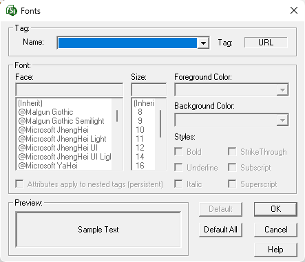

This command can also be executed by using the keyboard shortcut Alt+C.
The Font command is used to modify the font type, size, and style of text that is connected to a specific tag.
 Use this function with caution! Modifying the font will globally impact all SpecsIntact files for all Jobs and Masters. These changes will persist until the fonts are reset using the Default All button or until the software is reinstalled. Please note that headers and footers are hard coded as Courier New 10 and cannot be altered through these settings.
Use this function with caution! Modifying the font will globally impact all SpecsIntact files for all Jobs and Masters. These changes will persist until the fonts are reset using the Default All button or until the software is reinstalled. Please note that headers and footers are hard coded as Courier New 10 and cannot be altered through these settings.

Use the Name field to select the name of the tag to format. The corresponding tag will be displayed to the right within the Tag field.
Select the font type, size, and style to be used for the displayed tag.
 If a font type or size is inherited, it indicates the selected tag inherits the font settings from its parent tags. The foreground and background colors are not standard elements used in UFGS Master specifications.
If a font type or size is inherited, it indicates the selected tag inherits the font settings from its parent tags. The foreground and background colors are not standard elements used in UFGS Master specifications.
 If you want to give individual occurrences of text the following attributes, use the corresponding tag: Bold, Italic, Center, Underline, Superscript, and Subscript.
If you want to give individual occurrences of text the following attributes, use the corresponding tag: Bold, Italic, Center, Underline, Superscript, and Subscript.
 The OK button will execute and save the selections made.
The OK button will execute and save the selections made.
 The Cancel button will close the window without recording any selections or changes entered.
The Cancel button will close the window without recording any selections or changes entered.
 The Help button will open the Help Topic for this window.
The Help button will open the Help Topic for this window.
Users are encouraged to visit the SpecsIntact Website's Support & Help Center for access to all of our User Tools, including Web-Based Help (containing Troubleshooting, Frequently Asked Questions (FAQs), Technical Notes, and Known Problems), eLearning Modules (video tutorials), and printable Guides.
| CONTACT US: | ||
| 256.895.5505 | ||
| SpecsIntact@usace.army.mil | ||
| SpecsIntact.wbdg.org | ||